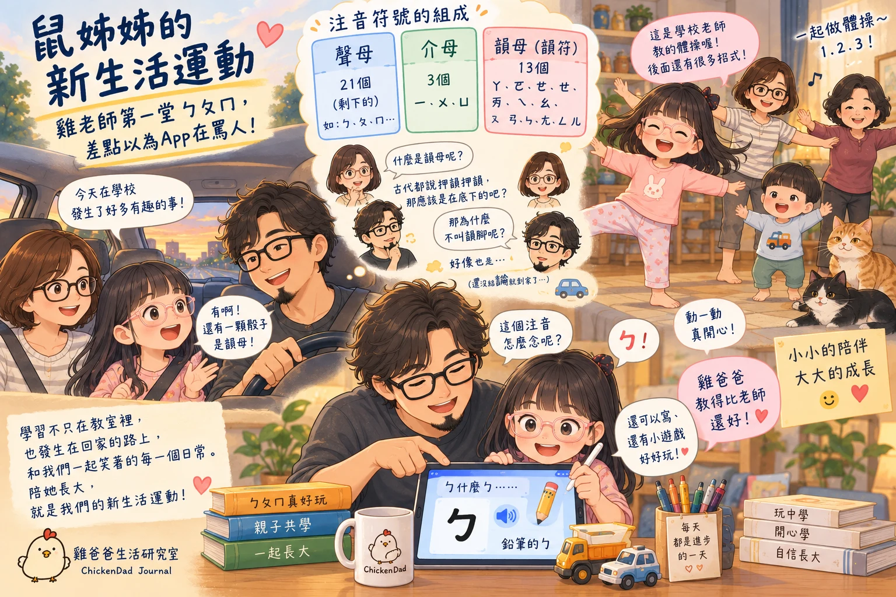

—陪妳一起長大，一起陪妳把生活變成最好的學習

前幾天，幼兒園老師提醒我們，鼠姊姊最近上課好像有一點不專心。
雞爸爸想了很久。
如果只是叫她「上課要專心一點喔」，好像也沒有什麼用。五歲的小孩大概只會點點頭，然後隔天到了學校，繼續當一個五歲的小孩。
所以雞爸爸決定，與其一直提醒她要怎麼做，不如先改變我們自己的生活方式。
於是，雞爸爸家正式啟動了兩項新生活運動：
第一，放學開車回家的路上，多聊天。
第二，回到家以後，由「雞老師」陪鼠姊姊複習一下最近學的東西。
聽起來很有教育理念，但實際執行第一天，雞老師差點連「韻母」是什麼都答不出來。
放學後的車子，突然變成了鼠姊姊的 Podcast
昨天放學後，雞爸爸和鼠媽媽先帶鼠姊姊去吃雞腿飯。
吃飽以後，一家三口坐上車，開始執行「開車聊天計畫」。
以前開車的時候，常常只是問：「今天學校好不好玩？」
「好玩。」
「今天有沒有乖？」
「有。」
然後，本日親子深度訪談結束...然後就開始BabyMonster合輯放送...
但今天雞爸爸跟鼠姊姊說好，今天開始聽鼠姊姊慢慢講跟哪些小朋友玩、誰做了什麼事、班上又發生了哪些只有五歲小孩才會覺得非常重要的小故事...
沒想到一聊就講了好多，講著講著，雞爸爸才順勢問：「那你們今天有教ㄅㄆㄇ嗎？」
鼠姊姊馬上說：「有啊！老師特製了有三顆骰子，不只有六個面，有一顆好像是...韻母」
這時鼠媽媽突然出題：「什麼是韻母？」
……
車內突然安靜了一秒，雞爸爸腦袋裡開始搜尋三十幾年前曾經存在過的國語課記憶。
聲母、韻母。嗯，好像有這兩個詞我知道。
至於差在哪裡…
雞爸爸憑藉著自己成年後累積多年的語文直覺，大膽推理：
「古代不是都說『押韻、押韻』嗎？所以韻母應該就是放在下面的吧？」
鼠媽媽想了一下，又問：「那為什麼不叫韻腳？」
……
好像也是。
雞爸爸趕快轉移話題，那你們老師的這個玩具我們上網查一下...
鼠姊姊說：「買不到啦，那可是老師自己，辛辛苦苦花很多時間做出來的...」
就在這時到家了，很好。
雞老師暫時逃過一劫。
一回家先不急著進入課程，先做體操
一進家門，鼠姊姊先開開心心跟兔阿嬤打招呼。
可能鼠姊姊最近學了新的體操，很想教媽媽，客廳一瞬間變成了幼兒體能教室。
鼠姊姊攤開瑜珈墊，開始帶著龍弟弟和鼠媽媽一起做體操。
手伸出去、腳抬起來，做完一個動作還有下一招。
雞爸爸在旁邊看了一下：「這是學校老師教的嗎？」
鼠姊姊很得意地說：「對啊！後面還有很多招喔！」
然後繼續帶著鼠媽媽和龍弟弟動來動去。
雞爸爸突然覺得，這好像才是放學後應該有的樣子。
不是一回家就坐到桌子前面滑平板，還是衝進遊戲間裡面玩玩具...
她只是很興奮地，把在學校學到的東西帶回家，再教給我們。
而趁著鼠姊姊正在當「體操老師」，雞老師，默默拿起手機開始惡補注音符號的資料。
原來注音符號裡，還可以分成：聲符 21 個、介符 3 個、韻符 13 個。
其中「ㄧ、ㄨ、ㄩ」屬於介符；
「ㄚ、ㄛ、ㄜ、ㄝ、ㄞ、ㄟ、ㄠ、ㄡ、ㄢ、ㄣ、ㄤ、ㄥ、ㄦ」則是韻符，也稱韻母。
雞爸爸看完突然有一種奇妙的感覺。
原來我們每天使用的中文，到了四十幾歲，才第一次這麼認真重新研究ㄅㄆㄇ。
養小孩最大的好處之一，大概就是可以合理重讀一次幼兒園。
「ㄅ什麼ㄅ？」第一堂課就差點被 App 罵
搞懂聲母韻母之後，下一個問題來了。ㄅㄆㄇ到底要怎麼教？
雞爸爸開始在手機上搜尋資料，找著找著，突然看到一個教注音的 App。
心生一計，下載，打開，接著找鼠姊姊過來試試，結果意外地非常適合。
畫面上先出現一個有虛線的注音符號，按一下可以聽發音，
接著點旁邊的筆，還可以跟著筆順把注音寫一次。
雞爸爸指著第一個符號問：「這個怎麼念？」
鼠姊姊馬上回答：「ㄅ！」
不錯，雞老師滿意地點點頭，接著按下旁邊老師的語音示範。
手機突然傳來：「ㄅ——什麼ㄅ……」
雞爸爸愣了一下。
然後直接笑出來，「蛤？罵人喔？」
鼠姊姊也笑了。
結果語音下一秒才接著說：「鉛筆ㄅ。」
喔，原來是造詞，害雞老師差點笑出來聲...
更有趣的是，每學完一個注音，後面還會出現對應的小遊戲。
像「鉛筆的ㄅ」，接著就可以玩鉛筆拼圖。
原本雞爸爸還擔心：「今天要學幾個？會不會她不感興趣...」
結果根本不用催，鼠姊姊和雞爸爸一開始說好四個。
結果自己一路：ㄅ、ㄆ、ㄇ、ㄈ…還加碼玩到ㄏ。
雞老師甚至還沒有來得及展現什麼高深教學法，學生就自己一路解鎖下去了。
「雞爸爸教得比老師還好」
晚上準備睡覺前，雞爸爸問今天ㄅㄆㄇ好玩嗎？鼠姊姊：「雞爸爸教得比老師還好...」
果然是雞爸爸的心肝寶貝，一聽完心裡還有一點暗爽...
畢竟雞老師才上任第一天，就收到學生五星好評，想說我是不是該改行...
差一點就想立刻成立：雞爸爸ㄅㄆㄇ補習班。
但後來想想，她喜歡的可能根本不是雞爸爸「比較會教」。
雞爸爸連韻母是不是韻腳，半小時前都還搞不清楚。
真正不一樣的，也許只是因為昨天晚上沒有考試。
她念對ㄅ，我們笑。
App 跑出「ㄅ什麼ㄅ」，我們一起笑。
她想繼續玩，就繼續玩。
不想玩的時候，也沒有人規定今天一定要學到哪裡。
對鼠姊姊來說，那不是一堂注音課，而是爸爸陪她一起玩她最近正在學的東西。
新生活運動真正想改變的，其實不是鼠姊姊
老師提醒鼠姊姊最近上課有點不專心之後，雞爸爸原本第一個念頭，也是：
我們是不是要幫她把學習拉回來？
但真正開始做了才發現，也許這場「新生活運動」，真正需要調整的並不是鼠姊姊。
而是我們...
以前接她放學，總想知道的是：今天乖不乖？功課做了嗎？老師教了什麼？
現在雞爸爸開始想多問一點：
今天誰讓妳笑了？妳今天跟誰玩？老師教的那個體操，可不可以教爸爸？
然後偶爾再偷偷混進一句：「所以…什麼是韻母？」
我們當然還是會陪她認ㄅㄆㄇ，也還是希望她上課能夠慢慢找到自己的專注。
只是雞爸爸開始覺得，學習不一定只能發生在教室裡。
它也可以發生在吃完雞腿飯的車上、三個人一起做體操的客廳裡，或者爸爸和女兒一起對著一個「ㄅ什麼ㄅ」笑到不行的晚上。
而「開車聊天計畫」第一天，雞爸爸最大的收穫也不是鼠姊姊一路學到了ㄏ。
而是我們好像又重新走進了一點—她五歲以後，正在慢慢變大的那個世界。
至於雞老師下一堂要教什麼？雞爸爸決定，還是先預習一下。
不然萬一鼠姊姊明天問：「爸爸，那介母為什麼不叫介腳？」
雞老師教室可能又要提早下課了...